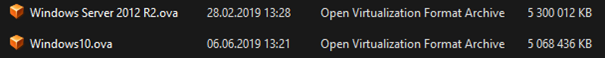
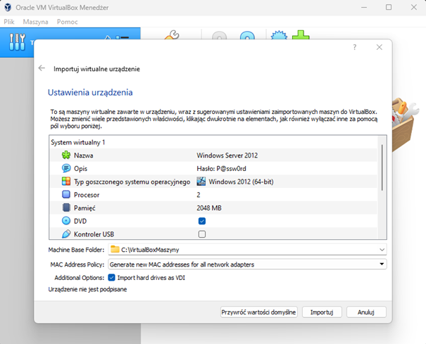
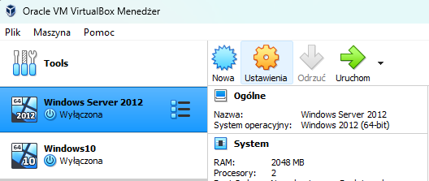
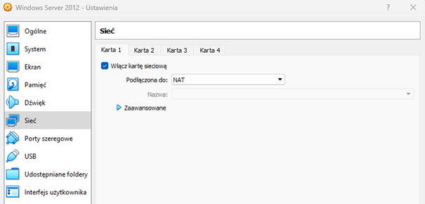
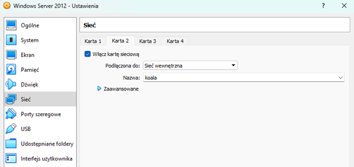
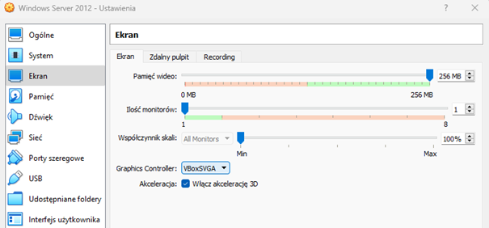
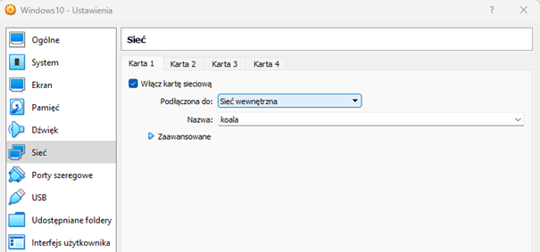

ADMINISTRACJA SYSTEMAMI OPERACYJNYMI / Konfiguracja w VirtualBox
Konfiguracja Oracle VM VirtualBox
Aby pominąć etap instalacji systemów Windowsów w wersji serwerowej oraz klienckiej pobierz z zakładki zasoby gotowe archiwa maszyn z zainstalowanymi systemami. Pliki zdatne do importu w VirtualBox`sie posiadają rozszerzenie .ova:  Aby dokonać importu wystarczy dwukrotnie kliknąć na plik archiwum systemu. Po chwili uruchomi się VirtualBox z oknem importu, zanim zaimportujesz maszynę zmień ścieżkę docelową, inaczej bazowy folder maszyny, na podobną do mojej.Kolejnymi opcjami które warto zmodyfikować przed importem to zmiana pamięci RAM oraz wyłączenie kontrolera USB.
Ostatnią rzeczą którą powinno się wykonać przed kliknięciem Import to zmiana opcji MAC Address Policy z inkludowania na wygenerowanie miedzy innymi nowego adresu MAC. 
Wybierz instancję „Windows Server 2012” pomarańczowe koło zębate z podpisem „Ustawienia”:  Przejdź do zakładki Sieci pierwszą kara sieciowa powinna być ustawiona na NAT.  Po kliknięciu w zakładkę „Karta 2” włącz kartę sieciową i zmień jej tryb działania na „Sieć wewnętrzna”. Jest to tak jakby VLAN dla maszyn wirtualnych pozwalający komunikować się z tylko innymi maszynami wirtualnymi będących w sieci wewnętrznej o danej nazwie. Mój „VLAN” nazywa się koala.  Przejdź do zakładki „Ekran” Zwiększając pamięć wideo oraz włączając akcelerację 3D możesz zapobiec przycinaniu się wirtualnych systemów. Najprawdopodobniej należało by też ustawić graficzny kontroler na VBoxSVGA .  Identyczne ustawienia ekranu będą na maszynie „Windows10”. Natomiast w zakładce sieci ustaw tylko jedną kartę sieciową w trybie „Sieć wewnętrzna”.  Aktualne konfiguracje pozwalają na wykonanie dalszych zadań.